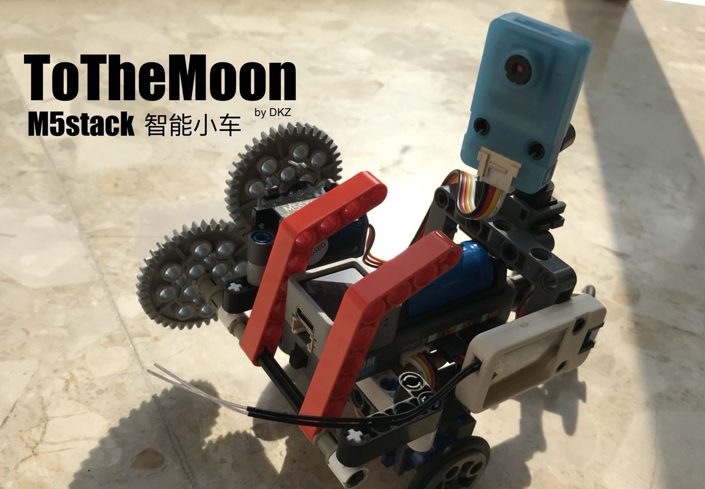

To The Moon 去月球！
That's one small step for me
2021/1/31 by DKZ

也许是为了我还没消失的童心，也许是中年男人对异性失去兴趣，做了个遥控智能小车。
主体是乐高件拼成的，前轮两个舵机加后轮万向轮进行差速转向，另有两个舵机控制翻斗抓取和云台转向。
使用M5stack Atom （esp32） 做控制，可以连一个 Unit V （k210）准备做些智能寻路。
遥控用了Frsky的接收机，做了SBUS转UART参考 https://github.com/bolderflight/SBUS 这个库，注意这两个协议的电平是反的要用一个硬件电路取反。
E B +----+
GND +---------+ +----+ 1k +--+
| | +----+ |
++--++ |
| | |
+----+ |
C| |
RX +-----------+ |
| |
+--+--+ |
| 10k | | +-----+
+--+--+ | | = led red(disconnect)/green(connected)
| | |
| +--+# SBUS
| |
5V +-----------+----------------+O 5V
|
GND +----------------------------+O GND
+---------+
遥控器控制和显示
ch7 ch6 ch5 ch4
head mode power
switch switch
+-----+ +-----+
| | | |
| 24 | 23 22 | 21 | 20
| | | |
+----------+ +-----+
| |
19 | 18 | 17 16 15
| |
+-----+ +-----+
| |
| 14 13 12 | 11 10
| |
+-----+ +-----------+
| | | |
9 | 8 | 7 | 6 | 5
| | | |
+----------+ +-----+
| |
4 3 | 2 1 0 |
| |
+-----------------+
A ch4 ^ - power on D ch7 ^ - head on
v + power off v + head off
B ch5 ^ - C ch6 ^ - mode ctrl
o 0 o 0 mix
v + v + v
ch2 ch1
+ +
^ ^
ch3 -< >+ -< >+ ch0
v v
-
还做了AP网页控制和unitV通过Serial传参控制小车的逻辑。
协议定义如下
// head0 1 body0 1 2 3 4 5 6 7
// 0xff 0x0a ch0 ch1 ch2 ch3 ch4 ch5 ch6 ch7
// begin lenth head head power L R power mode head
// < > ^ v ^ v < > on off c m v w on off
// ctrl - + + - + - - + - + - 0 + + - +
// ctrl default 0+ 0 +1 0+ +1 +1 0 +1
// v 180~0 180~0 0~120 60~0 1/2 0 1 0 2 3 1 0
// v default 90 60 30 0 0 0
// v 8 4=2 9 4=2 10 11 12
// S4 L angle S2 R angle
// ^ v ^ v
// 180~0 0~180
// v default 90 90
附上一个展示视频
有时间的话后续会做些基于 k210 图像识别的功能。暂无开源计划。